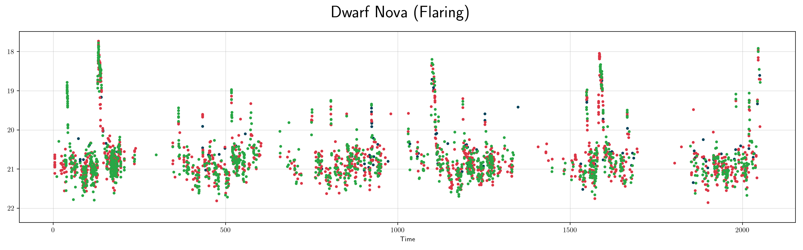
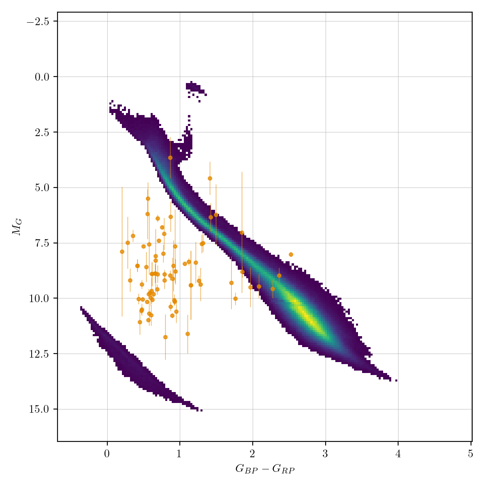
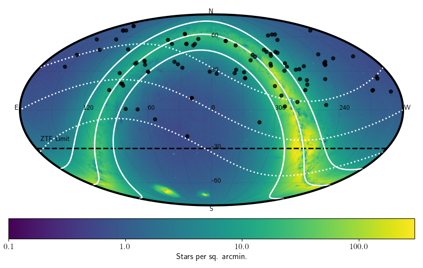

Flaring variables (fla)¶
The phenomelogical classification of flaring is any kind of outbursting source, where a variable star (or binary system) dramatically increases in brightness for minutes to hours before returning to quiescence. Most flare stars are red dwarfs, while RS Canum Venaticorum variables (RS CVn) are also known to flare due to a companion star in the binary system. Other possible sources of flaring include dwarf novae, which arise from accretion disk activity in a cataclysmic variable star.
Classification and numbers¶
Supertypes
variable
Occurrence rate: very common, for a given red dwarf, flares 10³¹ - 10³² ergs occur about once per day, and flares 10³³ - 10³⁴ ergs occur about once per 10-100 days.
ZTF light curves¶


Description¶
Flaring stars are easy to recognise by their increase in brightness from quiescent levels, rapidly returning to that same level shortly thereafter.
Light curve characteristics¶
variable
increase in brightness before returning to quiescence.
amplitude: at the bright end, flares can be many magnitudes, while at the dim end, flare detection is limited by survey photometric precision.


References and further reading:¶
Taichi Kato, WZ Sge-type dwarf novae, Publications of the Astronomical Society of Japan, Volume 67, Issue 6, December 2015, 108 arxiv:1507.07659
Maximilian N. Günther et al 2020 AJ 159 60, arxiv:1901.00443